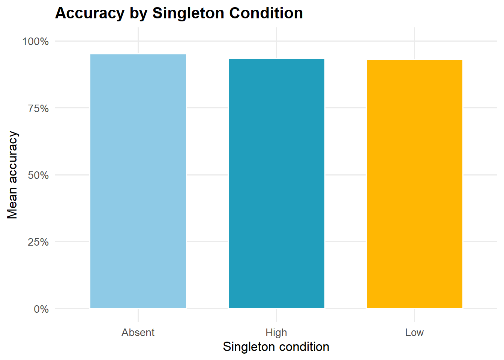
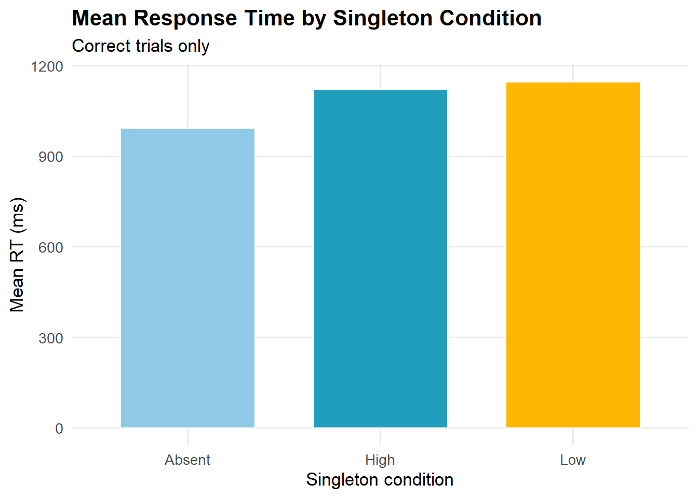
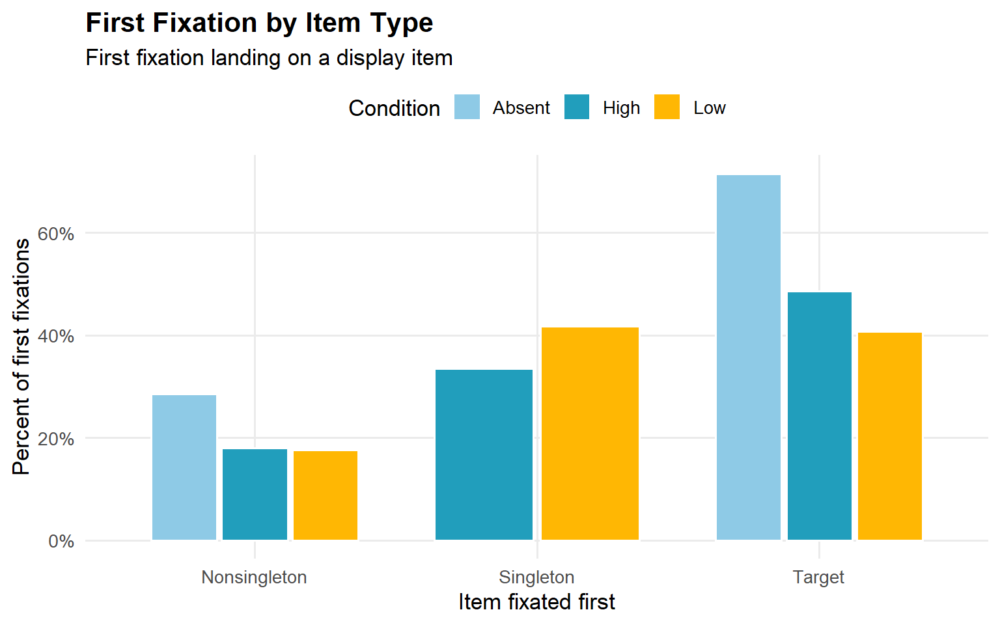
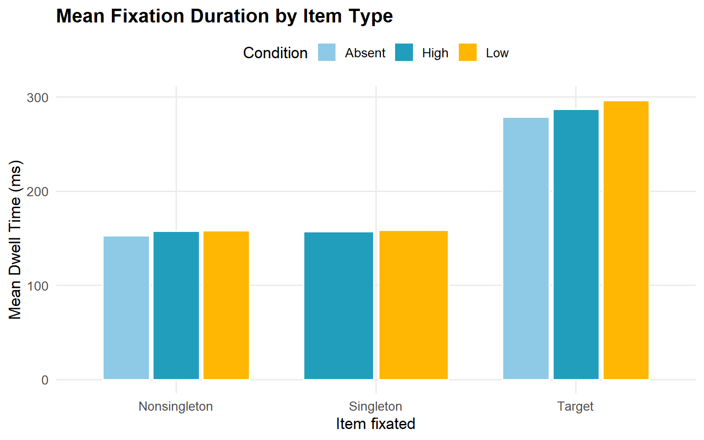

Goal: For this piece, as I was preparing for my first year project, I wanted to practice some explortory analysis on the data I have collected for my study. However, the original script we worked with is very long and includes many custom functions, exclusions, and publication-style summaries. My goal here is more modest: use the fixation report to do some exploratory analysis. As I am preparing for my poster, I wanted to use this piece mainly about learning the data, documenting my cleaning decisions, and creating simpler visualizations.
In our study, in a visual search task, participants look for a target item among other items. Sometimes, a visually salient distractor can capture attention even when it is not relevant to the task. In this dataset, the distractor was a color singleton. One of the critical manipulation is that one color appears more often than the others, creating high-frequency and low-frequency conditions. A major question in the broader research project was whether participants learn to avoid this distractor over time.
Because eye-tracking data are recorded at the fixation level, the dataset is more complex than a typical trial-level behavioral dataset. A single trial can have multiple rows because each fixation is recorded separately. This creates an important data science challenge: some variables describe the whole trial, while others describe individual fixations.
In our dataset, each row appears to represent one fixation within one trial. This means that a single trial can appear multiple times if the participant made multiple fixations during that trial.
The dataset includes behavioral variables, such as response time and accuracy, as well as eye-tracking variables, such as fixation position and fixation duration.
Important variables:
subjnum: participant IDblock, trial: task structureACC: whether the response was correctRT: manual response timesingPres: whether the singleton was present
(P) or absent (A)singProb: singleton condition (high,
low, or absent)targLoc, singLoc: target and singleton
locationsCURRENT_FIX_X, CURRENT_FIX_Y: fixation
coordinatesCURRENT_FIX_DURATION: how long the fixation lastedBecause response time and accuracy repeat across fixations, I summarize them using one row per trial. For fixation measures, I use the fixation-level rows.
library(tidyverse)## ── Attaching core tidyverse packages ──────────────────────── tidyverse 2.0.0 ──
## ✔ dplyr 1.2.0 ✔ readr 2.2.0
## ✔ forcats 1.0.1 ✔ stringr 1.6.0
## ✔ ggplot2 4.0.3 ✔ tibble 3.3.1
## ✔ lubridate 1.9.5 ✔ tidyr 1.3.2
## ✔ purrr 1.2.1
## ── Conflicts ────────────────────────────────────────── tidyverse_conflicts() ──
## ✖ dplyr::filter() masks stats::filter()
## ✖ dplyr::lag() masks stats::lag()
## ℹ Use the conflicted package (<http://conflicted.r-lib.org/>) to force all conflicts to become errorslibrary(janitor)##
## Attaching package: 'janitor'
##
## The following objects are masked from 'package:stats':
##
## chisq.test, fisher.testlibrary(scales)##
## Attaching package: 'scales'
##
## The following object is masked from 'package:purrr':
##
## discard
##
## The following object is masked from 'package:readr':
##
## col_factorfix_raw <- read_tsv("data/fix_report.txt", na = c(".", "NA"), show_col_types = FALSE) %>%
# Remove the prefix t_ from the beginning of column names.
clean_names() %>%
rename_with(~ str_remove(.x, "^t_"))
glimpse(fix_raw)## Rows: 65,876
## Columns: 29
## $ subjnum <dbl> 3, 3, 3, 3, 3, 3, 3, 3, 3, 3, 3, 3, 3, 3, 3, 3…
## $ block <dbl> 1, 1, 1, 1, 1, 1, 1, 1, 1, 1, 1, 1, 1, 1, 1, 1…
## $ trial <dbl> 2, 2, 2, 2, 2, 3, 3, 3, 3, 4, 4, 4, 4, 5, 5, 5…
## $ acc <dbl> 1, 1, 1, 1, 1, 1, 1, 1, 1, 1, 1, 1, 1, 1, 1, 1…
## $ rt <dbl> 1521, 1521, 1521, 1521, 1521, 997, 997, 997, 9…
## $ sing_pres <chr> "A", "A", "A", "A", "A", "A", "A", "A", "A", "…
## $ targ_loc <dbl> 3, 3, 3, 3, 3, 7, 7, 7, 7, 8, 8, 8, 8, 1, 1, 1…
## $ sing_loc <dbl> 7, 7, 7, 7, 7, 8, 8, 8, 8, 4, 4, 4, 4, 4, 4, 4…
## $ previous_sac_start_time <dbl> NA, 23, 273, 525, 783, NA, 158, 224, 392, NA, …
## $ current_fix_x <dbl> 953.8, 947.9, 1056.3, 1403.0, 1375.1, 971.0, 7…
## $ current_fix_y <dbl> 460.9, 487.8, 76.8, 441.9, 484.6, 485.4, 394.9…
## $ current_fix_index <dbl> 1, 2, 3, 4, 5, 1, 2, 3, 4, 1, 2, 3, 4, 1, 2, 3…
## $ current_fix_duration <dbl> 23, 232, 128, 198, 722, 158, 26, 126, 554, 274…
## $ current_fix_end <dbl> 21, 271, 523, 781, 1519, 156, 222, 390, 962, 2…
## $ previous_sac_end_time <dbl> NA, 39, 395, 583, 797, NA, 196, 264, 408, NA, …
## $ targ_shape <chr> "circle", "circle", "circle", "circle", "circl…
## $ targ_id <chr> "H", "H", "H", "H", "H", "V", "V", "V", "V", "…
## $ sing_col <chr> "green", "green", "green", "green", "green", "…
## $ resp <chr> "H", "H", "H", "H", "H", "V", "V", "V", "V", "…
## $ age <dbl> 18, 18, 18, 18, 18, 18, 18, 18, 18, 18, 18, 18…
## $ exp_vers <dbl> 3, 3, 3, 3, 3, 3, 3, 3, 3, 3, 3, 3, 3, 3, 3, 3…
## $ gender <chr> "F", "F", "F", "F", "F", "F", "F", "F", "F", "…
## $ hand <chr> "L", "L", "L", "L", "L", "L", "L", "L", "L", "…
## $ recording_session_label <chr> "SS_3", "SS_3", "SS_3", "SS_3", "SS_3", "SS_3"…
## $ condition <chr> "A", "A", "A", "A", "A", "A", "A", "A", "A", "…
## $ phase <chr> "practice", "practice", "practice", "practice"…
## $ sing_prob <chr> NA, NA, NA, NA, NA, NA, NA, NA, NA, NA, NA, NA…
## $ previous_fix_end <dbl> NA, 21, 271, 523, 781, NA, 156, 222, 390, NA, …
## $ current_fix_start <dbl> 0, 41, 397, 585, 799, 0, 198, 266, 410, 0, 318…fix_raw %>%
summarise(
rows_fixations = n(),
participants = n_distinct(subjnum),
trials = n_distinct(paste(subjnum, trial)),
blocks = n_distinct(block)
)## # A tibble: 1 × 4
## rows_fixations participants trials blocks
## <int> <int> <int> <int>
## 1 65876 32 15196 15The number of rows is larger than the number of trials because each trial can include multiple fixations. This is why I separate trial-level summaries from fixation-level summaries.
Our original analysis used several cleaning rules, including response time cutoffs, saccadic reaction time cutoffs, and accuracy filtering. For this piece, since I am using this to learn and practice, I used a simplified version of those rules for this exploratory analysis.
fix_clean <- fix_raw %>%
mutate(
subjnum = as.numeric(subjnum),
block = as.numeric(block),
trial = as.numeric(trial),
acc = as.numeric(acc),
rt = as.numeric(rt),
srt = as.numeric(previous_sac_start_time),
dwell = as.numeric(current_fix_duration),
targ_loc = as.numeric(targ_loc),
sing_loc = as.numeric(sing_loc),
sing_prob = case_when(
sing_pres == "A" ~ "Absent",
sing_prob == "high" ~ "High",
sing_prob == "low" ~ "Low",
TRUE ~ as.character(sing_prob)
),
sing_loc = if_else(sing_pres == "A", 0, sing_loc),
keep_rt = rt > 200 & rt <= 2500,
keep_srt = srt > 50 & srt < 1000
) %>%
filter(phase == "experiment")First, I converted important columns into numeric variables, including participant number, block, trial, accuracy, response time, saccadic reaction time, fixation duration, target location, and singleton location. This was necessary because some columns were read in as text even though they represent numbers.
I also created clearer condition labels for sing_prob.
In the original dataset, singleton-absent trials were marked using
sing_pres == "A", while present trials could be labeled as
high- or low-frequency singleton conditions. I recoded these into three
easier-to-read categories: Absent, High, and
Low.
Next, I set the singleton location to 0 for absent trials. This is because when the singleton is absent, its location is not meaningful. Setting it to 0 helps prevent absent trials from being treated as if a singleton appeared somewhere on the display.
Finally, I created two filtering variables: keep_rt and
keep_srt. These mark whether each trial had a response time
between 200 and 2500 ms and a saccadic reaction time between 50 and 1000
ms. These cutoffs are a simplified version of the original research
analysis. I also filtered the dataset to include only experimental
trials, removing practice trials.
Our raw/clean eye-tracking data is fixation-level, meaning one trial can appear multiple times because there can be several fixations in the same trial. But response time and accuracy belong to the whole trial, not to each fixation.
So before summarizing RT and accuracy, we need one row per trial.
trial_data <- fix_clean %>%
distinct(subjnum, trial, .keep_all = TRUE) %>%
filter(
keep_rt,
!is.na(acc),
!is.na(rt),
!is.na(sing_prob)
)
trial_data %>%
summarise(
trials_after_cleaning = n(),
participants = n_distinct(subjnum),
mean_rt = mean(rt, na.rm = TRUE),
mean_accuracy = mean(acc, na.rm = TRUE)
)## # A tibble: 1 × 4
## trials_after_cleaning participants mean_rt mean_accuracy
## <int> <int> <dbl> <dbl>
## 1 14216 32 1068. 0.943Accuracy is a trial-level outcome. That means each trial has one accuracy value: correct or incorrect. So, I summarized accuracy by singleton condition to see whether performance differed depending on the type of singleton trial.
Because accuracy is coded at the trial level, I used the trial-level dataset rather than the fixation-level dataset. This avoids counting trials with more fixations multiple times.
accuracy_summary <- trial_data %>%
group_by(sing_prob) %>%
summarise(
mean_accuracy = mean(acc, na.rm = TRUE),
n_trials = n(),
.groups = "drop"
)
accuracy_summary## # A tibble: 3 × 3
## sing_prob mean_accuracy n_trials
## <chr> <dbl> <int>
## 1 Absent 0.952 7131
## 2 High 0.936 5319
## 3 Low 0.930 1766Accuracy was high across all three singleton conditions. Participants were most accurate on singleton-absent trials, with an average accuracy of about 95.2% (makes sense since there is nothing distracting). Accuracy was slightly lower for high-frequency singleton trials, about 93.6%, and low-frequency singleton trials, about 93.0%.
This suggests that participants performed well overall, but they were a little less accurate when a singleton distractor was present. The difference is not huge, but it is consistent with the idea that distractors can make the visual search task somewhat harder.
One thing to note here, is that the number of trials differed by condition, with more absent trials than singleton-present trials. Because of this, I am interpreting these values descriptively rather than as a formal statistical test.
ggplot(accuracy_summary, aes(x = sing_prob, y = mean_accuracy, fill = sing_prob)) +
geom_col(width = 0.7, color = "white") +
scale_y_continuous(labels = percent_format(accuracy = 1), limits = c(0, 1)) +
scale_fill_manual(values = c("Absent" = "#8ECAE6", "High" = "#219EBC", "Low" = "#FFB703")) +
labs(
title = "Accuracy by Singleton Condition",
x = "Singleton condition",
y = "Mean accuracy",
fill = NULL
) +
theme_minimal(base_size = 13) +
theme(
plot.title = element_text(face = "bold"),
legend.position = "none",
panel.grid.minor = element_blank()
)
Here, we are accuracy as a basic check of performance. If accuracy is very low in one condition, response time patterns could be harder to interpret.
For response time, I only used correct trials because incorrect trials may reflect different decision processes.
rt_summary <- trial_data %>%
filter(acc == 1) %>%
group_by(sing_prob) %>%
summarise(
mean_rt = mean(rt, na.rm = TRUE),
median_rt = median(rt, na.rm = TRUE),
n_trials = n(),
.groups = "drop"
)
rt_summary## # A tibble: 3 × 4
## sing_prob mean_rt median_rt n_trials
## <chr> <dbl> <dbl> <int>
## 1 Absent 995. 912 6792
## 2 High 1120. 1039 4976
## 3 Low 1147. 1075 1643Mean response time differed by singleton condition. Participants were fastest on singleton-absent trials, with an average RT of about 995 ms. They were slower when a singleton distractor was present. Mean RT was about 1120 ms for high-frequency singleton trials and about 1147 ms for low-frequency singleton trials.
This pattern suggests a singleton presence cost: participants responded more slowly when a distracting singleton was present compared with when it was absent. The low-frequency singleton condition had the slowest average response time, which may suggests that lower-frequency distractors were harder to ignore or less expected.
The median response times show the same general pattern: absent trials had the fastest median RT, followed by high-frequency trials, then low-frequency trials. This makes the pattern more convincing because it is not only driven by extreme response times.
ggplot(rt_summary, aes(x = sing_prob, y = mean_rt, fill = sing_prob)) +
geom_col(width = 0.7, color = "white") +
scale_fill_manual(values = c("Absent" = "#8ECAE6", "High" = "#219EBC", "Low" = "#FFB703")) +
labs(
title = "Mean Response Time by Singleton Condition",
subtitle = "Correct trials only",
x = "Singleton condition",
y = "Mean RT (ms)",
fill = NULL
) +
theme_minimal(base_size = 13) +
theme(
plot.title = element_text(face = "bold"),
legend.position = "none",
panel.grid.minor = element_blank()
)
Now, we want to see, for each fixation, what item was the participant probably looking at?
The dataset includes fixation coordinates, but it does not directly label each fixation as being on the target, singleton, or another item. To simplify the analysis, I used the known display locations to classify each fixation by the nearest item location.
screen_width <- 1920
screen_height <- 1080
center_x <- screen_width / 2
center_y <- screen_height / 2
eccentricity <- 400
fix_zone <- 90
set_size <- 8
item_locations <- tibble(
item_loc = 1:set_size,
angle = (item_loc - 1) * 2 * pi / set_size,
item_x = center_x + eccentricity * sin(angle),
item_y = center_y - eccentricity * cos(angle)
)
fix_items <- fix_clean %>%
filter(keep_rt, keep_srt, acc == 1) %>%
mutate(row_id = row_number()) %>%
crossing(item_locations) %>%
mutate(distance = sqrt((current_fix_x - item_x)^2 + (current_fix_y - item_y)^2)) %>%
group_by(row_id) %>%
slice_min(distance, n = 1, with_ties = FALSE) %>%
ungroup() %>%
mutate(
curr_loc = if_else(distance <= fix_zone, item_loc, NA_integer_),
curr_item = case_when(
is.na(curr_loc) ~ NA_character_,
curr_loc == targ_loc ~ "Target",
curr_loc == sing_loc ~ "Singleton",
TRUE ~ "Nonsingleton"
)
)The display was 1920 by 1080 pixels. The center of the screen was used as the starting point. The task had 8 possible item locations (these are either circles or diamonds) arranged in a circle, about 400 pixels from the center. We used a 90-pixel radius as the fixation zone around each item.
For each fixation, we calculate the distance between the fixation coordinates and each of the 8 possible item locations. Then we kept the item location with the smallest distance. This gives us the closest display item for each fixation.
If the fixation was within 90 pixels of the nearest item, we counted it as landing on that item. If it was farther than 90 pixels, we treated it as not landing on any item. Then we labeled the item as the target, the singleton distractor, or a nonsingleton item.
This is a simplified version of the original research analysis. It is useful for exploratory analysis, but it is still an approximation because eye-tracking data can be noisy and fixations do not always land perfectly on an item.
After looking at response time and accuracy, we will nowexplore where participants looked first. In this task, a first fixation could land on the target, the singleton distractor, or a nonsingleton item. This analysis helps connect the behavioral results to eye movements (which is the main reason for the study).
For each trial, we identified the first fixation that landed on one of the display items. Then we summarized whether the first fixation landed on the target, singleton, or a nonsingleton.
first_fixation <- fix_items %>%
filter(!is.na(curr_item)) %>%
group_by(subjnum, trial) %>%
arrange(current_fix_start, .by_group = TRUE) %>%
slice(1) %>%
ungroup()
first_fix_summary <- first_fixation %>%
count(sing_prob, curr_item) %>%
group_by(sing_prob) %>%
mutate(percent = n / sum(n)) %>%
ungroup()
first_fix_summary## # A tibble: 8 × 4
## sing_prob curr_item n percent
## <chr> <chr> <int> <dbl>
## 1 Absent Nonsingleton 1789 0.285
## 2 Absent Target 4488 0.715
## 3 High Nonsingleton 836 0.180
## 4 High Singleton 1558 0.335
## 5 High Target 2260 0.486
## 6 Low Nonsingleton 271 0.176
## 7 Low Singleton 643 0.417
## 8 Low Target 628 0.407ggplot(first_fix_summary, aes(x = curr_item, y = percent, fill = sing_prob)) +
geom_col(position = position_dodge(width = 0.75), width = 0.7, color = "white") +
scale_y_continuous(labels = percent_format(accuracy = 1)) +
scale_fill_manual(values = c("Absent" = "#8ECAE6", "High" = "#219EBC", "Low" = "#FFB703")) +
labs(
title = "First Fixation by Item Type",
subtitle = "First fixation landing on a display item",
x = "Item fixated first",
y = "Percent of first fixations",
fill = "Condition"
) +
theme_minimal(base_size = 13) +
theme(
plot.title = element_text(face = "bold"),
legend.position = "top",
panel.grid.minor = element_blank()
)
The first-fixation plot shows that participants were most likely to look first at the target. This makes sense because the goal of the task was to find the target. In singleton-absent trials, about 69% of first fixations landed on the target and about 29% landed on nonsingleton items.
When the singleton was present, first fixations were more spread out. In the high-frequency condition, about 48% of first fixations landed on the target, about 34% landed on nonsingleton items, and about 18% landed on the singleton. In the low-frequency condition, about 40% landed on the target, about 42% landed on nonsingleton items, and about 17% landed on the singleton.
Overall, this suggests that participants often looked at the target first, but singleton-present trials created more competition between display items. The singleton itself captured some first fixations, but many first fixations also went to nonsingleton items.
Next, I looked at fixation duration. This tells us how long participants stayed on different kinds of items after looking at them.
dwell_summary <- fix_items %>%
filter(!is.na(curr_item), !is.na(dwell), dwell > 0) %>%
group_by(sing_prob, curr_item) %>%
summarise(
mean_dwell = mean(dwell, na.rm = TRUE),
median_dwell = median(dwell, na.rm = TRUE),
n_fixations = n(),
.groups = "drop"
)
dwell_summary## # A tibble: 8 × 5
## sing_prob curr_item mean_dwell median_dwell n_fixations
## <chr> <chr> <dbl> <dbl> <int>
## 1 Absent Nonsingleton 153. 140 3134
## 2 Absent Target 279. 236 9021
## 3 High Nonsingleton 158. 146 2020
## 4 High Singleton 157. 144 1936
## 5 High Target 287. 240 6240
## 6 Low Nonsingleton 158. 146 701
## 7 Low Singleton 158. 148 790
## 8 Low Target 296. 254 2040ggplot(dwell_summary, aes(x = curr_item, y = mean_dwell, fill = sing_prob)) +
geom_col(position = position_dodge(width = 0.75), width = 0.7, color = "white") +
scale_fill_manual(values = c("Absent" = "#8ECAE6", "High" = "#219EBC", "Low" = "#FFB703")) +
labs(
title = "Mean Fixation Duration by Item Type",
x = "Item fixated",
y = "Mean Dwell Time (ms)",
fill = "Condition"
) +
theme_minimal(base_size = 13) +
theme(
plot.title = element_text(face = "bold"),
legend.position = "top",
panel.grid.minor = element_blank()
)
The dwell time results show a clear difference between target fixations and distractor fixations. Target fixations were longer than nonsingleton and singleton fixations across conditions. For example, mean target fixation duration was about 279 ms in absent trials, 287 ms in high-frequency singleton trials, and 296 ms in low-frequency singleton trials.
In contrast, nonsingleton and singleton fixations were much shorter, usually around 150–160 ms on average. Singleton fixations were very similar to nonsingleton fixations in both the high- and low-frequency conditions. This suggests that when participants looked at distractor items, they tended to move away relatively quickly, while target fixations lasted longer. This aligns with one of our hypotheses of the study.
This pattern makes sense because the target was task-relevant. Participants likely needed more time on the target to identify it and make a response, while singleton and nonsingleton distractors could be rejected more quickly.
This exploratory analysis helped me practice the analysis process for my project by simplifying the complex eye-tracking dataset into a more manageable form.
This analysis is intentionally simplified. In our research analysis, we will be using the complete preprocessing pipeline, including more careful and in-depth fixation classification, subject exclusion rules, and within-subject error bars.